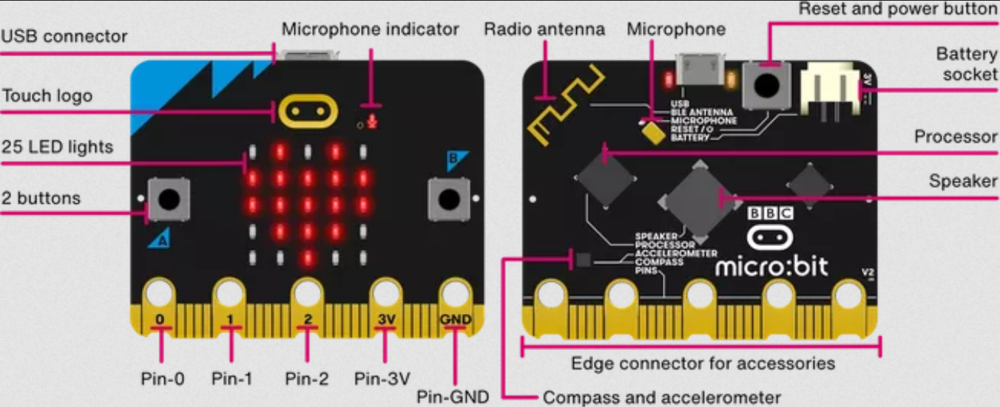

Meeting The Brief
Video and Images of Project
Video of Project
Coding Area (VScode)

Meeting the Basic Requirement 1
Inputs (Digital & Analogue)
Outputs (Digital & Analogue)
First, it will ask how they are currenlty feeling. The user uses buttons A and B to select their emotion, pressing the microbit logo to choose it. The user chooses between 3 emotions; "happy", "neutral", "sad".
After, it will ask how intensity they feel that way. Using buttons A and B again, they choose from a range between 1-5, pressing the microbit logo to choose it.
Meeting the Basic Requirement 2
Storing and Validating the Data
From the emotion, and intensity of the emotion gathered from the user, it is first validated. This is done by converting the "emotion" value to a string, and the "intensity" value to an integer. It is then formatted, and sent to be stored on a CSV file on the microbit,
Meeting the Basic Requirement 3
Analysis Component
From the CSV dataset, the general emotional state of the user can be calculated and graphed. From this graph, the user can see how their emotions changed throughout the day. This will also allow the user to predict how their mood will change as the day progresses.
Meeting the Advanced Requirement 1
Meeting the Advanced Requirement 3
From the dataset generated by the user, the user can use a python script to automatically compile and plot the data from the dataset. The data will be graphed, with the x-axis being the time from morning to night, they can then graph the emotions felt throughout the day. The user will use a python script which would compile and plot the mood on the y axis,
Meeting the Advanced Requirement 2
From the graph generated in the Advanced Requirement 2, the user can gain insight into how their mood progresses throughout the day.